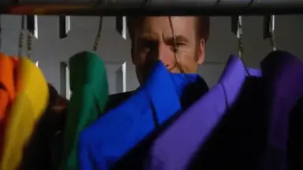
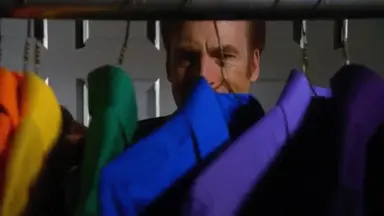
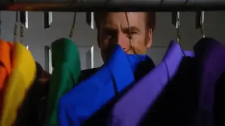

Bob Odenkirk, born on October 22, 1962, is an accomplished American actor, comedian, and writer. He is widely recognized for his role as Saul Goodman in the acclaimed series "Breaking Bad," a character that became so iconic it led to the successful spin-off "Better Call Saul." Odenkirk's versatility extends beyond drama, as he has showcased his comedic talents in projects like "Mr. Show with Bob and David," a sketch comedy series he co-created.
In addition to his television success, Bob Odenkirk has made notable contributions to film with roles in movies such as "Nebraska" and "The Post." His ability to seamlessly transition between genres and his enduring presence in both comedy and drama have solidified Odenkirk as a respected and multifaceted figure in the entertainment industry.
